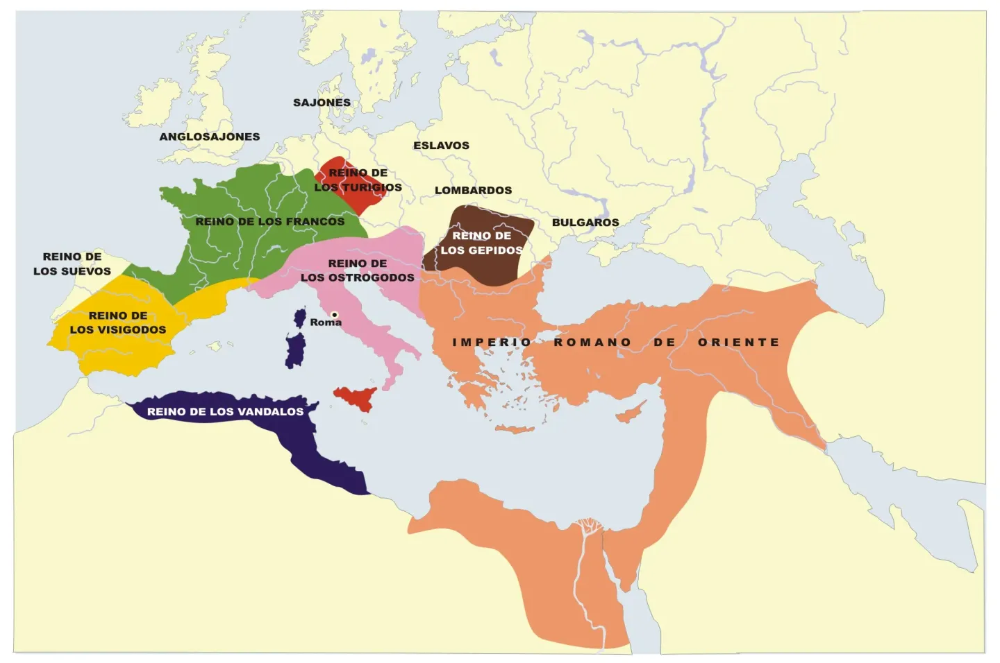

Batallas Clave
Fue una de las derrotas más grandes de la historia de Roma frente al general cartaginés Aníbal Barca durante la segunda guerra púnica.
Los romanos, liderados por Cayo Claudio Nerón y Marco Livio Salinator, derrotaron a Asdrúbal Barca, hermano de Aníbal, en la segunda guerra púnica.
Liderada por Escipión el Africano, supuso la pérdida definitiva de Hispania para Cartago.
Julio César derrotó de forma aplastante a Cneo Pompeyo Magno, marcando el principio del fin de la República.
Enfrentamiento naval en el mar Jónico, frente al golo de Ambracia, el cuál fuedecisivo, donde Octavio derrotó a Marco Antonio y Cleopatra, consolidando su poder y marcando el inicio del Imperio Romano.
Enfrentamiento decisivo donde Constantino I derrotó a Majencio. Marcó el inicio del fin de la Tetrarquía y abrió el camino hacia la adopción del cristianismo en el Imperio.
El emperador romano de Oriente, Valente, derrotó a las fuerzas del usurpador Procopio, poniendo fin a su rebelión en Lidia.
Victoria romana bajo el mando de Valentiniano I frente a los alamanes tras sufrir intensas bajas en un asalto frontal.
Combate sangriento e indeciso en la diócesis de Tracia entre el ejército romano y los godos alzados en armas.
Derrota cataclísmica romana donde murió el propio emperador Valente. Marcó el inicio de la presión bárbara irrefrenable dentro de las fronteras imperiales.
La alianza entre Flavio Aecio y el rey visigodo Teodorico I detuvo la invasión de Atila el Huno en la Galia.
Segundo gran saqueo de la capital imperial. Los vándalos de Genserico saquearon de forma metódica las riquezas de la ciudad durante catorce días.
Odoacro depuso al joven emperador Rómulo Augústulo en Ravena. Este acontecimiento marca tradicionalmente el fin de la Edad Antigua y el comienzo de la Edad Media.